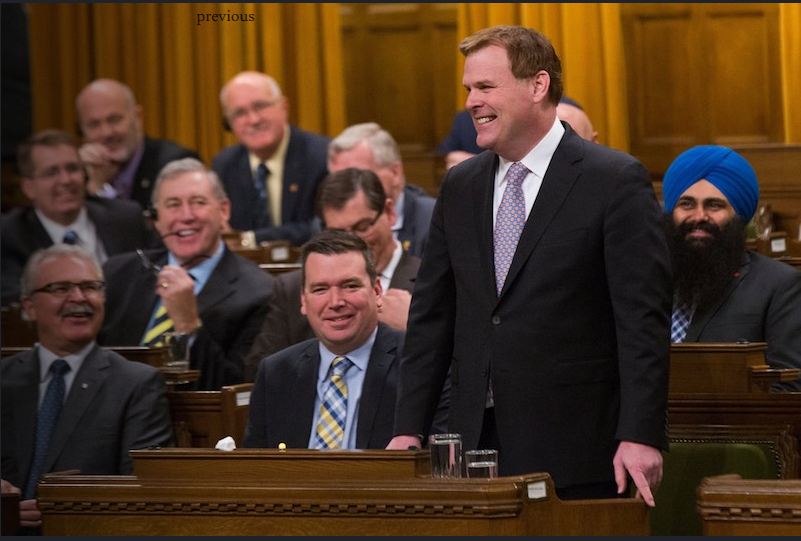

Meet The Conservatives - John Baird
February 23rd, 2021
In my article that I wrote yesterday detailing the clown worthy expulsion of Derek "Almost Chad" Sloan from the Servative Party of Canada by Erin "Fuck my Wife Pls" O'Toole, I came across one particularly repulsive creature: Conservative John Baird.
John "Jew Cock Pls" Baird
I have to admit, a large part of my disgust was simply due to that face. However, he caught my eye in part because of the quote I saw from him on Derek Sloan's cartoonishly stupid eviction from the Cuck Party.
TDC_ARTICLE_START
"I've worked well with many social conservatives in our party over the years. They are welcome in our party, but Derek Sloan's behaviour is not," wrote former Conservative cabinet minister John Baird on social media this week.
TDC_ARTICLE_STOP
My Pedo-Dar was beeping at me. I've had a few false positives, but I was absolutely certain in my short time with John Baird that I would come to realize two things about him.
1. He was a complete whore for openly zionist jews. ("Goyim exist to serve us")
2. He was a complete whore for whichever billionaires give him a cheque.
I was and still am quite certain that Baird is a disgusting pervert of some kind, but I was not able to find any corroborating evidence to support such a claim.
But first, let me allow John Baird to introduce himself, from his website.
TDC_ARTICLE_START
Mr. Baird is a Senior Advisor to various enterprises and a former Senior Cabinet Minister in the Government of Canada.
An instrumental figure in bilateral trade and investment relationships, Mr. Baird has played a leading role in the Canada-China dialogue and worked to build ties with ASEAN countries. In addition, Mr. Baird has worked closely with international leaders to strengthen security and economic ties with the United States and Middle Eastern countries.
TDC_ARTICLE_STOP
 A true man of the people. As long as those people are billionaires, many of whom don't even live in this country.
TDC_ARTICLE_START
A native of Ottawa, Baird spent three terms as a Member of Parliament and four years as Foreign Minister. He also served as President of the Treasury Board, Minister of the Environment, Minister of Transport and Infrastructure, and Leader of the Government in the House of Commons. Prior to entering federal politics, Mr. Baird spent ten years in the Ontario Legislature where he served as Minister of Community and Social Services, Minister of Energy, and Government House Leader.
TDC_ARTICLE_STOP
He doesn't give you the timetable here, but he does say is both vague and revealing. First, I love the idea that these career politicians are secretly these renaissance men, with all these different talents. Let's see, this guy is the Transport Minister, the Environment Minister, President of the Treasury, and Leader of the Government. Wow, imagine having so much experience that you can do all those jobs to a high level. Then imagine having literally no experience and doing them anyway because that's how politics actually works.
And as far as giving you the timeline, a quick Wikipedia search doesn't particularly help, because he's one of these guys who's just sort of there. He was "Environmental Minister," for a year, then Transport Minister while the Conservatives were the minority party. Then when the CuckoldServatives won, in 2010, he got a vague "Cabinet Minister," job. Like I said, he's one of these balls of ooze that's just sort of there. Always present in the background, being a good little goy for his donors.
A true man of the people. As long as those people are billionaires, many of whom don't even live in this country.
TDC_ARTICLE_START
A native of Ottawa, Baird spent three terms as a Member of Parliament and four years as Foreign Minister. He also served as President of the Treasury Board, Minister of the Environment, Minister of Transport and Infrastructure, and Leader of the Government in the House of Commons. Prior to entering federal politics, Mr. Baird spent ten years in the Ontario Legislature where he served as Minister of Community and Social Services, Minister of Energy, and Government House Leader.
TDC_ARTICLE_STOP
He doesn't give you the timetable here, but he does say is both vague and revealing. First, I love the idea that these career politicians are secretly these renaissance men, with all these different talents. Let's see, this guy is the Transport Minister, the Environment Minister, President of the Treasury, and Leader of the Government. Wow, imagine having so much experience that you can do all those jobs to a high level. Then imagine having literally no experience and doing them anyway because that's how politics actually works.
And as far as giving you the timeline, a quick Wikipedia search doesn't particularly help, because he's one of these guys who's just sort of there. He was "Environmental Minister," for a year, then Transport Minister while the Conservatives were the minority party. Then when the CuckoldServatives won, in 2010, he got a vague "Cabinet Minister," job. Like I said, he's one of these balls of ooze that's just sort of there. Always present in the background, being a good little goy for his donors.

Vaguely in a Power Position
And you'd think from his website that he was out of politics now. Indeed his Wikipedia page also lists him as retired. So I guess he's just one of these guys who's such an obedient little shill that the propagandists go to him to get a quote, even though he's not actually involved with the Conservative Party anymore. However, he could also be involved with the Conservative Party still, in a behind the scenes position that he sort of always held, but now he just gets paid directly from the donors. It's a tossup.
Sticking with his website, johnbaird. I really think one picture can sum up this queer, and while I would highly recommend you take a look at all of them, this one in particular really takes the cake.
Ignore the arrows, it's a screenshot
Hey young diverse urban youth! John Baird is taking a hammer to the outdated notion of the stuffy old White Man Conservative. Look at him playing soccer with a bunch of brown kids. Hip!
Like, why would this even make it into your top 10 pictures as a politician? Are some of those children your lovers John? Did you rape one or two of them? If I downloaded that picture from your hardrive, would it be called something like "hotBrownChildren.jpg"?
So here he is doing some deal with the Obama Administration that 100% did not benefit Canadians in any way. No I have no idea what specifically is happening in the picture, but I know that his donors are being serviced at your expense.

I know that I said earlier that I was going to just put one picture up, and now I put three up. But the problem is that I can't find a single picture of him on his own website, where he doesn't look like a total creepy asshole. Frankly, where everyone in the picture doesn't look like a total asshole, except maybe for the brown children playing soccer.
I then started to do my research, and the very first article that I found was this.
World Jewish Congress:
TDC_ARTICLE_START
WJC's young Jewish Diplomats addressed by former Canadian FM John Baird at Toronto training session
TDC_ARTICLE_STOP
TDC_ARTICLE_START
Former Canadian Foreign Minister John Baird addressed a group of World Jewish Congress’ Jewish Diplomats (JDs) in Toronto on Sunday, for an off-the-record conversation together with the Canadian Center for Israel and Jewish affairs.
TDC_ARTICLE_STOP
"Off record conversation." I'm sure the reason that it was off the record was because the things they were going to say were going to be so damn popular that it would make the goyim look bad. Definitely not because Baird was promising them "oh yeah, I'll send lots of goyim to die for your ethnostate," and they were saying "on your knees before I give you this $10,000.00 cheque you fucking goy-whore."
TDC_ARTICLE_START
Ten members of the WJC’s flagship Jewish Diplomatic Corps (JDCorps) program and three members of CIJA’s young leadership program gathered in the Canadian city for the day-long session aimed at providing them with a practical training module on diplomatic engagement.
TDC_ARTICLE_STOP
Jesus Fucking Christ.
TDC_ARTICLE_START
Baird’s address focused on his views on Israel, Iran, the Boycott, Divestment and Sanctions movement, and issues pertaining to the United Nations and international diplomacy.
TDC_ARTICLE_STOP
Really weird how they don't want their views on the Jew Ethnostate of Israel, the legitimate state of Iran, the popular Boycott Divest and Sanction movement, and general globalist issues made public. So weird.
 Again, I think it's because they're really afraid of making the goyim look bad. Those jews, always looking out for the goyim when making secret backroom deals with politicians. Thank god this is what is popular in the Servative Party of Canada. I would hate for them to switch their attention from backroom off-the-record talks with Jew Supremacists to ending racial discrimination against White People or stopping Child Trannies.
So there you go. This is what the (((Conservative Party of Canada))) is. It's giving billionaires everything they want, and then going and having off-the-record conversations with Jew Nationalists.
Again, I think it's because they're really afraid of making the goyim look bad. Those jews, always looking out for the goyim when making secret backroom deals with politicians. Thank god this is what is popular in the Servative Party of Canada. I would hate for them to switch their attention from backroom off-the-record talks with Jew Supremacists to ending racial discrimination against White People or stopping Child Trannies.
So there you go. This is what the (((Conservative Party of Canada))) is. It's giving billionaires everything they want, and then going and having off-the-record conversations with Jew Nationalists.

A true man of the people. As long as those people are billionaires, many of whom don't even live in this country.
TDC_ARTICLE_START
A native of Ottawa, Baird spent three terms as a Member of Parliament and four years as Foreign Minister. He also served as President of the Treasury Board, Minister of the Environment, Minister of Transport and Infrastructure, and Leader of the Government in the House of Commons. Prior to entering federal politics, Mr. Baird spent ten years in the Ontario Legislature where he served as Minister of Community and Social Services, Minister of Energy, and Government House Leader.
TDC_ARTICLE_STOP
He doesn't give you the timetable here, but he does say is both vague and revealing. First, I love the idea that these career politicians are secretly these renaissance men, with all these different talents. Let's see, this guy is the Transport Minister, the Environment Minister, President of the Treasury, and Leader of the Government. Wow, imagine having so much experience that you can do all those jobs to a high level. Then imagine having literally no experience and doing them anyway because that's how politics actually works.
And as far as giving you the timeline, a quick Wikipedia search doesn't particularly help, because he's one of these guys who's just sort of there. He was "Environmental Minister," for a year, then Transport Minister while the Conservatives were the minority party. Then when the CuckoldServatives won, in 2010, he got a vague "Cabinet Minister," job. Like I said, he's one of these balls of ooze that's just sort of there. Always present in the background, being a good little goy for his donors.
Again, I think it's because they're really afraid of making the goyim look bad. Those jews, always looking out for the goyim when making secret backroom deals with politicians. Thank god this is what is popular in the Servative Party of Canada. I would hate for them to switch their attention from backroom off-the-record talks with Jew Supremacists to ending racial discrimination against White People or stopping Child Trannies.
So there you go. This is what the (((Conservative Party of Canada))) is. It's giving billionaires everything they want, and then going and having off-the-record conversations with Jew Nationalists.